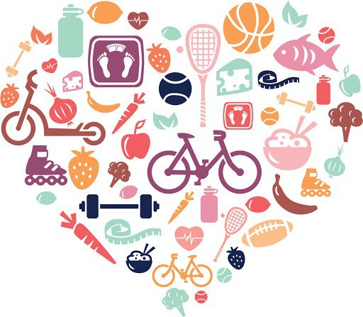

𝓟𝓻𝓲𝓷𝓬𝓲𝓹𝓪𝓵𝓮𝓼 𝓞𝓫𝓳𝓮𝓽𝓲𝓿𝓸𝓼
- Asegurar la salud y el bienestar de todos en todas las edades mediante la mejora de la salud reproductiva, materna e infantil.
- Poner fin a las epidemias de las principales enfermedades transmisibles.
- Reducir las enfermedades no transmisibles y ambientales.
- Alcanzar la cobertura sanitaria universal y asegurar el acceso.
𝓛𝓸𝓼 𝓸𝓫𝓳𝓮𝓽𝓲𝓿𝓸𝓼 𝓭𝓮 𝓼𝓪𝓵𝓾𝓭 𝓮𝓷 𝓜é𝔁𝓲𝓬𝓸
- Mejorar las condiciones de salud de los mexicanos.
-
Abatir las desigualdades en salud.
- arantizar un trato adecuado en los servicios públicos y privados de salud.
- Asegurar la justicia en el financiamiento en materia de salud.
- Garantizar una vida sana y promover el bienestar de todos a todas las edades.
- Cada año siguen muriendo más de 6 millones de niños menores de 5 años, y solo la mitad de todas las mujeres de las regiones en desarrollo tienen acceso a la asistencia sanitaria que necesitan.
